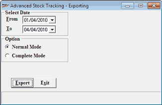
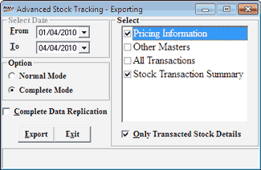

This option is used to create replication data files, for a given period, to be exported to HO in addition to the file sent by the day end program. There are two modes of extraction namely Normal and Complete.
How to reach: Housekeeping > Data Export Masters > Replication Export (AST)
The Advanced Stock Tracking – Exporting window is displayed.

Select Date
From: Enter the start date
To: Enter the end date
Option: Select Normal Mode or Complete Mode.
Complete Mode:
Note: The date fields are irrelevant when Complete Mode is selected and are not editable.
By selecting this mode, the entire database is considered from the day of Shoper installation.
Complete Data Replication: This option is checked by default where extraction is not restricted to specific transaction type.

If you do not need complete data replication, then deselect this option. The transaction types are displayed on the right side of the window. Select by checking the boxes against the transaction types.
Only Transacted Stock Details: Select this box if the extraction of the data has to be limited to items which have been transacted at least once.
Export: To create the VSP file in the Shoper-Out directory with naming pattern as:
If complete data replication is selected then file naming will be SsccXXXX.VSP
If complete data replication is not selected then file naming is as follows:
All option are selected then SsccXXXX.VSP
Pricing Information and Other Masters or any one selected from the list like pricing information or other master then SsccYYYY.VSP
All Transaction and Stock Transaction Summary or any one selected from the list like All transaction or stock transaction summary then SsccZZZZ.VSP